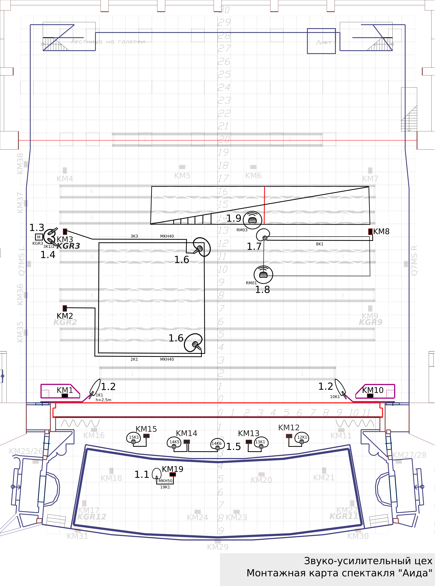

Аида
12+ 40(30)/35(30)/60 22:20

1.1. Микрофон конденсаторный, супер-кардиоидный, с узкой диафрагмой, 1 шт. (SENNHEISER MKH50); –
устанавливаются в оркестровой яме для озвучивания арфы, используется стойка на круглом основании.
1.2. Микрофон конденсаторный, пушка 2 шт. (SENNHEISER MKH60) – устанавливаются на края карманов
портальных башен на высоте 2.5 метра для озвучивания хора, используются клэмпы.
1.3.Монитор сценический 1 шт., устанавливаются на пол за кулисами перед хором.
1.4. Стереопара (XY), состоящая из конденсаторных кардиоидных микрофонов
устанавливается за кулисами перед хором.
1.5.Микрофоны граничного слоя устанавливаются на край аванс-сцены
для озвучивания хора и солистов.
1.6. Микрофон конденсаторный, кардиоидный, с узкой диафрагмой, 2 шт. (SENNHEISER MKH40); –
устанавливаются на правый
ближний и правый дальний края подиума для озвучивания солистов на подиуме
и хора на лестнице соответственно.
1.7. Микрофон граничного слоя устанавливается на левый дальний край декорации “балкон”, под планшетом
декорации, для
озвучивания хоров у основания декорации “пирамида”. Используется спец. крепление.
1.8. Микрофон-лавалье устанавливается на ближний левый несущий трос декорации “балкон”. Передатчик
закрепляется на перила с
помощью скотча. Служит для озвучивания солистов (Царь, Аида).
1.9. Микрофон-лавалье устанавливается на центральный ближний несущий трос декорации “пирамида”. Передатчик
закрепляется на
перила с помощью скотча. Служит для озвучивания солистов (Царь, Амнерис).
1.10. Микрофон-лавалье петличный для персонажа “Царь”. Выдается включенным, за 15 минут перед началом
первого акта, в
гримерной соответствующего артиста (передатчик размещается в спец. кармане костюма)